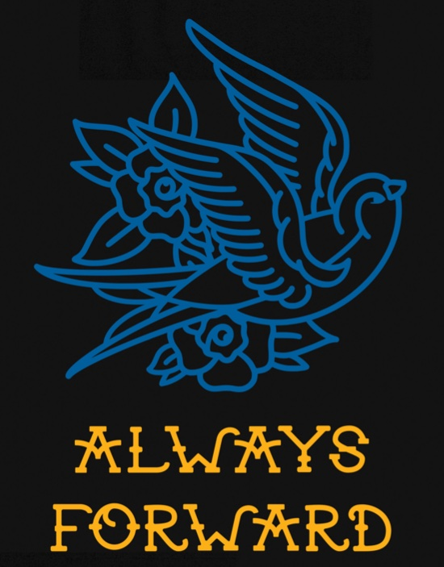

St. Mary's LifeTeen is devoted to "Leading teens closer to Christ"!
Upcoming Events
Life Night Series: "Wolves in Sheeps Clothing"

As Christians we make a descision to dedicate our lives to Christ, but sometimes we fail to keep him in the center of our lives. This retreat will focus on the four things St. Thomas Aquinas says That runs the risk of replacing God in our lives.
Those four things are Wealth, Power, Money, and Staus. Each night of our four week series will focus on one of these four things that replace God.
Advent retreat: "Always Forward"
Dates: Dec. 9th--11th

In life there is suffering, this retreat is focused on perserverance through that suffering.
You Cannot avoid suffering in this world. But you can unite your suffering with Christ and have it gain merit in heaven.